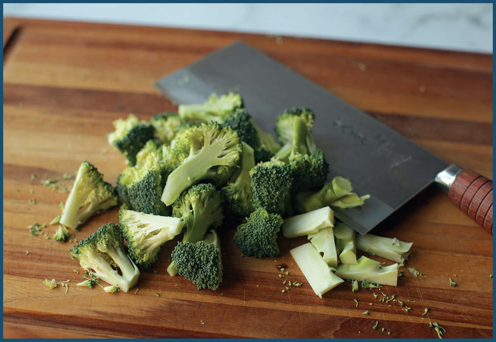
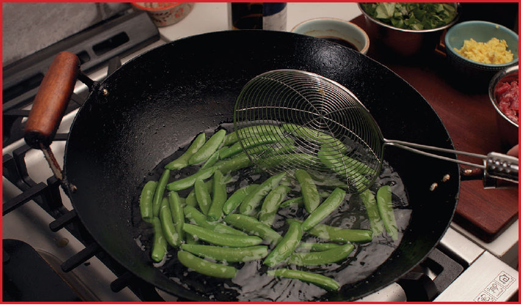
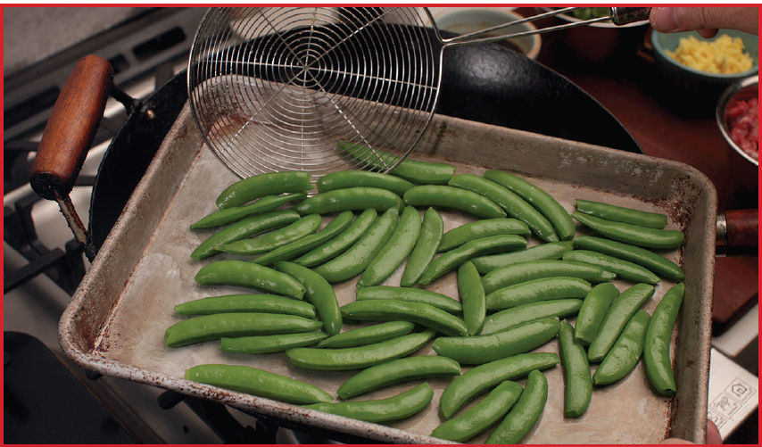

Vegetables in the Wok

I remember walking into the kitchen of my college fraternity house one afternoon as our cook, Clint, was making dinner. On the menu were beef and broccoli and a vegetarian stir-fry with broccoli, carrots, green beans, and red bell peppers. We chatted as he stirred the contents of the large rondeau with a wooden spoon, raw vegetables coming halfway up the sides of the pan and a big cloud of steam emanating from within. When the vegetables had cooked for a good ten minutes, some of them still raw, some softened to a drab brown, he glugged in a few cups of food-service all-purpose teriyaki marinade and sauce.
By the time dinnertime rolled around half an hour later, the “stir-fry” was a drab vegetable stew. I distinctly remember eating those sauce-saturated broccoli florets and thinking that Clint was a much better conversationalist than cook (at least when it came to Asian food; his chicken soup and pan pizzas were fantastic).
Ever since their introduction to Western cooks, woks have had a cozy-but-troubled relationship with vegetables and health-conscious cookery. On the one hand, the idea is enticing. We’ve all had perfectly cooked vegetables from good Chinese restaurants that retain their brightness and crunch while simultaneously developing complex flavors layered with aromatics, sauces, and smoky wok hei. On the other hand, we’ve also experienced a Clint-style motley mix of vegetables, cooked together until it’s tough to distinguish the green beans from the bell peppers.
So what’s the trick? How do you stir-fry vegetables right?
The rules for cooking vegetables in a wok are similar to the rules for cooking meat. Here is my basic advice (and of course, there are some recipes in this book that will flatly ignore some of these rules, but we’ll get to those).
VEGETABLE STIR-FRY RULE #1: Cut vegetables into uniform, bite-sized pieces.
In most stir-fries, your vegetables should spend no more than a minute or two inside the wok, and in that time they need to cook through and pick up flavor. Greens like bok choy or romaine lettuce should be roughly chopped, green vegetables like green beans or broccoli should be sliced on a bias into 1- to 2-inch pieces, root vegetables like carrots or radishes should be cut thin enough to heat through rapidly.
VEGETABLE STIR-FRY RULE #2: Dry vegetables thoroughly after washing.
Remember: it takes about five times more energy to evaporate a single drop of water than it does to raise the temperature of that water all the way from freezing to boiling. Any moisture left clinging to vegetables will significantly lower the temperature of your wok, leading to less-than-optimal flavor development. It’s a good idea to spin any washed vegetables through a salad spinner before stir-frying, unless they’re going to be blanched first (see the next rule).
VEGETABLE STIR-FRY RULE #3: Blanch (or microwave) green vegetables.
Green vegetables such as asparagus, broccoli, green beans, and baby bok choy are especially sensitive to heat. It’s possible to stir-fry them from raw, but it’s very difficult to get them to cook evenly this way. The bit in direct contact with the wok will cook much faster than the bits just above the wok, while the bits at the very top will absorb very little energy at all. Even with constant stirring and tossing, even cooking is not an easy accomplishment. Blanching green vegetables will ensure that the vegetables cook through evenly while simultaneously enhancing their color. (See “Blanching Green Vegetables for Stir-Fries” on here for more details.)
VEGETABLE STIR-FRY RULE #4: Don’t cook the whole garden.
The more vegetables you add to your wok, the more difficult it becomes to nail the perfect cook on every one. If you are planning on making up your own stir-fried vegetable recipe (and you should!), try to stick to a manageable number of options. Three different vegetables is about as complex as I’d get.
VEGETABLE STIR-FRY RULE #5: Don’t crowd the wok.
With their high water content and propensity for softening rather than searing, vegetables suffer from a crowded wok even more than meat. Do not cook more than around a half pound of raw vegetables or a pound of blanched vegetables at a time. If you’re using more than this, cook the vegetables in batches, transferring them to a separate bowl as you cook each successive batch before adding them all back to the wok to toss with the sauce at the end.
VEGETABLE STIR-FRY RULE #6: Don’t overcook.
As vegetables cook, the pectin glue that holds together their cells will begin to break down. Simultaneously, cells themselves will lose moisture, causing vegetables to turn limp and lose their bright color and fresh flavor. The most crucial step when stir-frying vegetables is getting them out of the wok right when they are done, and not a moment later.
Blanching Green Vegetables for Stir-Fries
I’ve always taken it as a given that green vegetables should be blanched in hot water then shocked in ice water before stir-frying. But is it really necessary? To test this, I stir-fried two batches of Chinese Broccoli with Oyster Sauce (here):
1.Broccoli blanched in boiling water for 45 seconds, then shocked in cold water, drained, then added to the stir-fry
2.Stir-fried directly from raw
Immediately there were noticeable differences between the batches. Vegetables stir-fried from raw take longer in the pan, and because the heat in a wok is so strongly directional and fierce, it’s difficult to get them to soften evenly. You wind up with vegetables that are charred and soft in some spots but still raw and fibrous in others. Moreover, the blanched broccoli came out with a much more vibrant green color than the broccoli stir-fried from raw.
This was the case whether I was cooking broccoli, snap peas, or string beans. The results of vegetables cooked from raw aren’t bad—I might consider skipping blanching on nights when I’m in a rush—but if you’ve got a few extra minutes, blanching is worth the trouble.
So how about shocking in ice water? Do we really need to dunk our vegetables in ice water after boiling them if we’re going to be reheating them again so soon?
I cooked up another two batches, blanching the broccoli in both batches, but shocking only one in cold water. The other I simply fished out with a spider and transferred it to a sheet tray and spread it into a single layer, where I let it sit on the kitchen counter while I prepped the remaining ingredients for the stir-fry.
Surprisingly, it turned out that the unshocked broccoli was better than the broccoli that was shocked! The reason? Shocking chills your vegetables fast, but it also leaves them wet, and even a salad spinner can’t completely rid them of that cold water. Wet vegetables means rapid cool-down when you add them to the wok (remember: evaporating water takes far more energy than simply heating water), which in turn means more time in the wok, which translates to overcooked broccoli.
Blanching and setting them aside while still steaming hot, on the other hand, allows your vegetables to cool rapidly enough to retain color while simultaneously coming out nice and dry as the hot water clinging to them readily evaporates. By the time they hit the wok, they’re bright green and perfectly dry, ready for a toss through the oil and sauce.
Cooking Multiple Vegetable Dishes for One Meal
When stir-frying a dish that requires blanching vegetables, I always start by boiling salted water in my wok while I prepare my ingredients so that the water is hot and ready as soon as I’m ready to cook. I blanch my vegetables, drain them and dump the water, then start my stir-fry. But what if I wanted to cook a couple vegetable dishes that both require blanching for the same meal?
Let’s say, I’m making Beef with Broccoli (here) as well as Spring Vegetables with Olives and Sichuan Peppercorns (here). One method is to do all the blanching at the beginning: Boil the water, blanch the broccoli, fish it out using a spider and transfer it to a rimmed baking sheet to cool and dry, then blanch the asparagus, followed by the snap peas, and so on.


In fact, blanching green vegetables is something you can do well ahead of time. If I know I have a few stir-fries that I’m going to be cooking over the next couple of days, I’ll blanch all of my green vegetables in a single batch of boiling water (blanching them in succession), let them steam dry, then store them in the fridge until I’m ready to stir-fry.
Another solution I turn to from time to time is the microwave.
If one were to ask the Internet to vote on the Most Depressing Cookbook Ever, a 1999 volume called Microwave Cooking for One would be a top-seeded contender. This is a malignment only slightly less unfair than the disdain microwave ovens themselves receive.
Would you believe me if I told you that some of the greatest restaurants in the world rely on microwaves to cook green vegetables? It’s true! (I mentioned the process, as it applies to Western cooking, in my first book, The Food Lab, under the section “Micro-steaming.”)
Why are microwaves so great at blanching green vegetables? Let’s quickly take a look at how they work. Microwaves are a form of electromagnetic radiation. Sounds scary, but don’t be afraid. Not all forms of EM radiation (as we’ll refer to it from now on) are dangerous. We’d be in a lot of trouble if it weren’t around. It’s literally everywhere. The ultraviolet rays that are blocked by your carefully applied sunblock are EM radiation. The gamma rays that transform Bruce Banner into the Hulk are EM radiation. The X-rays the doctor used to image the hairline fracture in my daughter’s elbow were EM radiation. The cell towers and WiFi routers that beam music to your iPhone (or the waves that beam your shopping, browsing, and travel habits to EvilMegaCorp.com) use EM radiation. The warm glow of a fire is EM radiation. The heat emitted from your space heater is EM radiation. The very light that we see is EM radiation.
Some wavelengths are inherently dangerous, some are safe, and some are only dangerous if you jam the door open and stick your head inside the metal box while it’s operating. Microwave ovens work through a process called dielectric heating. Essentially, dipoles—that is, molecules that have an imbalance of positive and negative charges from one end to the other—will align themselves in an electromagnetic field. If that field is rapidly shifting, as it is when microwaves are beamed at them from the magnetron housed in the side of your microwave oven, those molecules will oscillate rapidly—billions of times per second—creating heat.
Water is one such molecule, with the oxygen side holding a negative charge and the hydrogen sides holding a positive charge. (Both fat and sugars are also dipoles, but much weaker than water.) Because vegetables are composed largely of water, they heat up extremely efficiently in a microwave oven. This is good news for stir-fries, as it means you can par-cook your green vegetables and get them stir-fry ready in a matter of minutes, no big pot of boiling water necessary.
The only downsides? Microwaves tend to cook unevenly, which means you either have to be OK with slightly unevenly cooked vegetables or be very diligent in stopping the microwave to stir and toss every 15- to 20 seconds. Some very strongly flavored brassicas, such as mustard greens or particularly hot Chinese broccoli, also benefit from an actual dunk in boiling water to help dilute some of their bitterness.
Here’s how I micro-steam vegetables:
Step 1 • Prep
Prep vegetables by peeling, trimming, and cutting as needed. Place vegetables in a microwave-safe bowl* and add a couple tablespoons of water.
Step 2 • Cover
Cover with a lid, plastic wrap, or a second, slightly smaller microwave-safe bowl inverted over the first.
Step 3 • Cook
Microwave on high power at 15-second intervals, stirring and repeating until the vegetables are tender-crisp, usually around 1 minute total.
*Believe it or not, that includes metal bowls. Modern microwaves can handle metal bowls without issue. However, avoid putting sharp or crinkly metallic objects, such as forks or aluminum foil in a microwave. With irregular shapes, electrons that freely move about in metal tend to aggregate at points, creating a heavy charge differential that can lead to arcing—the electric discharge created as air converts to a plasma—either within the metallic object itself or between the object and the microwave wall. It’s the same principle by which a lightning rod attracts lightning, except rather than safely leading the current into the ground, an arcing microwave can damage the microwave and whatever happens to be inside it at the moment.
HOW TO PREPARE ANY VEGETABLE FOR A STIR-FRY
VEGETABLE |
HOW TO PREPARE |
Broccoli (Western) |
Separate florets into bite-sized pieces. Peel thick stems, split in half or quarters lengthwise, and cut on a sharp bias into 1- to 2-inch pieces. Blanch in boiling salted water for 1 minute, drain, and spread on a baking sheet to cool and air-dry. |
Broccolini or gai lan (Chinese broccoli) |
Cut on a bias into 1- to 2-inch pieces. Blanch in boiling salted water for 1 minute, drain, and spread on a baking sheet to cool and air-dry. |
Cabbages such as Napa, bok choy, and green |
Discard core. Cut into 1½- to 2-inch squares. |
Carrots |
Peel and cut into fine matchsticks or split in half or into quarters lengthwise and slice on a sharp bias. |
Cauliflower |
Discard core. Separate florets into bite-sized pieces. Blanch in boiling salted water for 1 minute, drain, and spread on a baking sheet to cool and air-dry. |
Celery |
Cut on a sharp bias into 1- to 2-inch pieces or dice. |
Fresh corn |
Cut kernels off of cob. |
Eggplant |
Cut into pieces, soak in a 6 percent brine solution (60 g salt per liter of water, about 1⁄3 cup kosher salt per quart of water) for 10 to 20 minutes, drain, and spin in salad spinner or pat dry with paper towels. |
Green vegetables such as snap peas, snow peas, green beans, and asparagus |
Trim and slice on a bias into bite-sized pieces. Blanch in boiling salted water for 1 minute, drain, and spread on a baking sheet to cool and air-dry. |
Hearty greens such as kale, mustard, or collard greens |
Remove and discard tough stems. Roughly chop leaves. Blanch in boiling salted water for 1 minute, drain, and spread on a baking sheet to cool and air-dry. |
Leafy greens such as spinach, mizuna, or tatsoi |
Wash and spin dry in a salad spinner. |
Lettuces such as romaine or iceberg |
Roughly chop, wash, and spin dry in a salad spinner. |
Mushrooms |
Trim stems. Small mushrooms like beech and enoki can be cooked whole. Slice larger mushrooms. |
Onion |
Cut into slivers or dice. |
Peppers, such as bell, shishito, or Anaheim |
Cut into slivers or dice. |
Potatoes (russet or Yukon gold) |
Peel and cut into fine matchsticks and wash in several changes of water until no starch can be seen. |
Potatoes (new or fingerling) |
Boil in heavily salted water until tender, then drain. |
Radishes and small turnips |
Scrub clean, trim greens, and cut into bite-sized sections. |
Shoots, such as pea shoots or fava bean shoots |
Wash and spin dry in a salad spinner. |
Scallions |
Cut on a bias into 1- to 2-inch segments. |